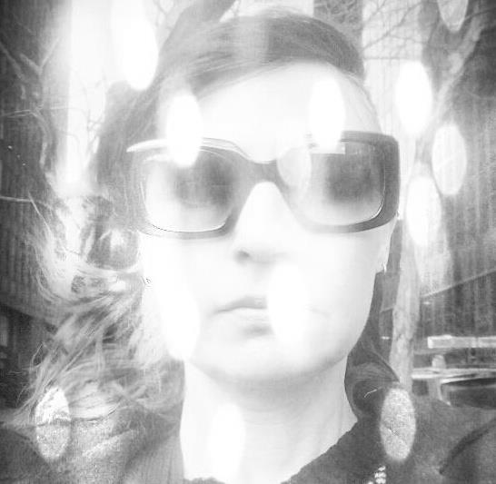

|  |
Lisa GoodellOffice Administrator, Accountant, Artist, and Future Web Developer |
After a slew of corporate service jobs, I opened a vegetarian coffeeshop, Bouldin Creek Cafe, with a friend in the Spring of 2000. I went from partner to manager, working front of house, as well as line cooking. After I started doing office work - basic bookkeeping - I decided in 2006 to go back to school to get an accounting degree. Soon after I worked in the office full time, and took over payroll.
At the end of 2010, we moved the location to an old tire repair shop down the street, where we became a full-service restaurant. Since then, I have been the Office Administrator, doing all HR, payroll, and full accounting for the business.